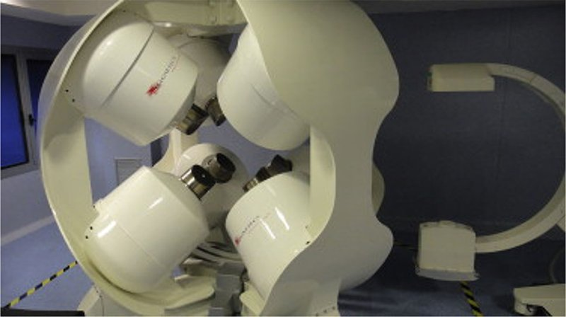

Commercial and clinical-stage systems · cgci_magnetecs2011
CGCI
CGCI (Catheter Guidance Control and Imaging) remote magnetic navigation system

1 / 3


- Family
- Commercial and clinical-stage systems (magnetic-navigation)
- Devices
- magnetized irrigated gold-tip EP ablation catheter (MedFact) with three permanent-magnet pellets at the tip, through an Agilis ES sheath (filgueirasrama2013_remote Protocol 1, Fig. 1); 4-mm-tip ablation catheter in pigs (gang2011_dynamically abstract); catheter 7 Fr / 2.2 mm (jeong2017_feasibility Introduction)
- Degrees of freedom
- 3 (mandhumula2025_robotic Table 1; alekseeva2025_design Table 14); field shaped by 8 coil-core electromagnets, push-pull by field gradient (filgueirasrama2013_remote Representative Results) plus a motorized linear catheter advancer
- Push
- Magnetic
- Twist
- Field direction
- Tested up to
- Human
- Sim-to-real
- None found — No simulation-trained controller found for this robot.
Testing
- Highest level
- Human
- What was tested
- human: 5 atrial flutter ablations (3 left, 2 counterclockwise right), acute success 5/5, no procedure-derived complications, no recurrence at 3-11 months (filgueirasrama2013_remote Table 1); animal: 10 pigs, left-atrial mapping, linear and circumferential RF lesions, selective PV isolation in a subset (gang2011_dynamically abstract)
- Key numbers
- field up to 0.16 T (filgueirasrama2013_remote Protocol 1); 0.14 T and 0.7 T/m gradients (mandhumula2025_robotic text); pigs, automated mode: 96 +/- 8.4% reproducible, 1.9 +/- 0.4 mm from target, 11.6 +/- 3.5 s to target, lesion depth 78.5 +/- 12.1% of atrial wall (gang2011_dynamically abstract); five initial experimental procedures: 95.7% reproducible, 1.9 +/- 0.9 mm, 23.28 +/- 14.8 s (filgueirasrama2013_remote Representative Results)
Mechanism
- Push (translation)
- magnetic (field-gradient push-pull at the tip); motorized linear catheter advancement mechanism with a sterilizable wheel-drive gearbox on a motor base, joystick-controlled slack/advance (filgueirasrama2013_remote Protocol 1, Fig. 2A, 2C)
- Twist (rotation)
- tip direction by dynamically shaped field of 8 fixed electromagnets, 4 above and 4 below the patient in a semi-spherical chamber (li2020_magnetic Sec. 3.3; gang2011_dynamically abstract)
- Device range
- N.R.
- Target anatomy
- cardiac electrophysiology: right and left atrial flutter ablation (filgueirasrama2013_remote Table 1); pig left atrium mapping and RF lesions (gang2011_dynamically abstract)
Sensing and interface
- Force sensing
- none reported
- Leader and haptics
- no: right-hand 3D controller and left-hand 3-axis joystick at a remote operation console (filgueirasrama2013_remote Fig. 2B-C)
- Imaging
- X-ray fluoroscopy, EnSite NavX electroanatomic mapping, EP recording and ICE unified at the operation console (filgueirasrama2013_remote Protocol 1); recording and fluoroscopic equipment unaffected by the fields (gang2011_dynamically abstract)
- Sterility
- sterilizable wheel-drive gearbox, disposable sheath clip and leg mount on the advancer (filgueirasrama2013_remote Fig. 2A)
Size
- Footprint (mm)
- N.R. (semi-spherical chamber of 8 electromagnets around the torso, li2020_magnetic Fig. 5)
- Mass (kg)
- N.R.
Simulation
- Simulation model
- none found
- Sim-trained controller
- none found
Versions
- Lineage
- single system: animal validation in 10 pigs (gang2011_dynamically, abstract); initial human safety and feasibility protocol at La Paz University Hospital, Madrid, 5 flutter ablations (filgueirasrama2013_remote, Table 1); later discontinued (mandhumula2025_robotic: 'now seems to have been discontinued', 'not adopted commercially')
Sources
- Dynamically Shaped Magnetic Fields: Initial Animal Validation of a New Remote Electrophysiology Catheter Guidance and Control System · Circulation: Arrhythmia and Electrophysiology, 2011 · doi:10.1161/circep.110.959692 [gang2011_dynamically]
- Remote Magnetic Navigation for Accurate, Real-time Catheter Positioning and Ablation in Cardiac Electrophysiology Procedures · Journal of Visualized Experiments, 2013 · doi:10.3791/3658 [filgueirasrama2013_remote]
- A review of magnetic actuation systems and magnetically actuated guidewire- and catheter-based microrobots for vascular interventions · Intelligent Service Robotics, 2020 · doi:10.1007/s11370-020-00311-0 [li2020_magnetic]
- Robotic Systems in Cardiovascular Interventions: Evolving Platforms and the Path Forward · Methodist DeBakey Cardiovascular Journal, 2025 · doi:10.14797/mdcvj.1652 [mandhumula2025_robotic]
- Robotic Systems Design in Endovascular Treatment · IEEE Transactions on Medical Robotics and Bionics, 2024 · doi:10.1109/tmrb.2024.3377374 [li2024_design]
- Current and Emerging Robot-Assisted Endovascular Catheterization Technologies: A Review · Annals of Biomedical Engineering, 2014 · doi:10.1007/s10439-013-0946-8 [rafiitari2014_current]
- The Design of Endovascular Robots for Cardiac Interventions: A Survey · Journal of Field Robotics, 2024 · doi:10.1002/rob.22480 [alekseeva2025_design]
- Feasibility study on magnetically steerable guidewire device for percutaneous coronary intervention · International Journal of Control, Automation and Systems, 2016 · doi:10.1007/s12555-015-0269-7 [jeong2017_feasibility]
Notes
- Notes
- Family: commercial (A4 scope; clinical-stage magnetic navigation). A4 had set it aside as EP-only and discontinued; the author put it in (round 8). data/snowball_candidates.csv files Gang 2011 under 'Niobe': it is the CGCI paper. Regulatory clearance N.R. in the sources read. Conflict: field maximum 0.16 T (filgueirasrama2013_remote) vs 0.14 T (mandhumula2025_robotic).
This record
- Read level
- full — full (filgueirasrama2013_remote, Europe PMC full text); abstract (gang2011_dynamically); review-only for status (li2020_magnetic, mandhumula2025_robotic)
- Picture
- li2020_magnetic Fig. 5 (Hwang 2020; reproduced there from Moya 2013 Rev Esp Cardiol) ↗ — licence: publisher copyright; grade B
- Picture changes
- native extract from p. 5; no crop; none upscaled
- Found by
- commercial: Search of commercial and clinical-stage systems.
- Data
- JSON · YAML:
records/robots/cgci_magnetecs2011.yaml - Correction
- Suggest a correction [repository not created yet]